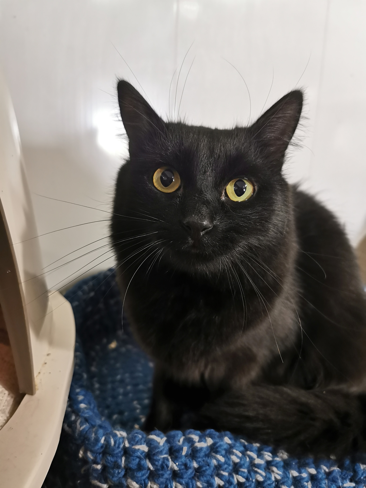
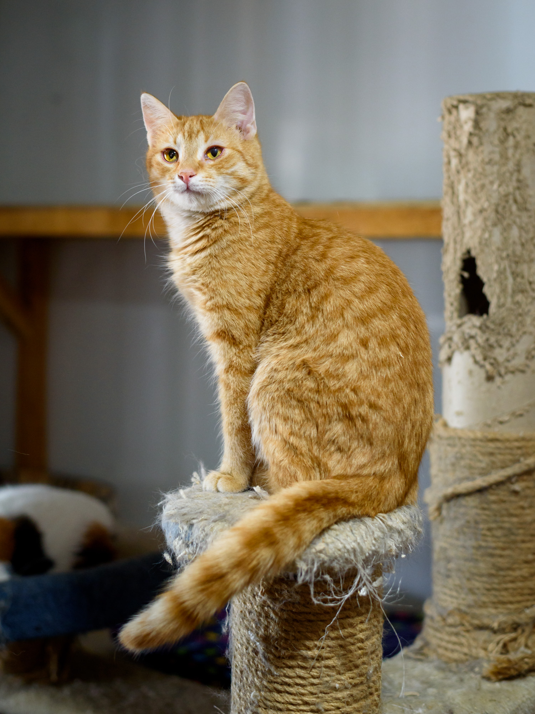
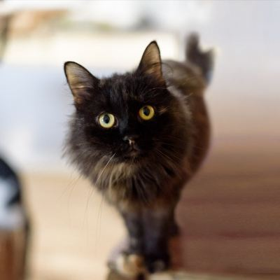
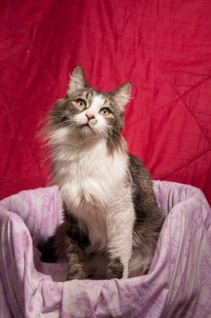
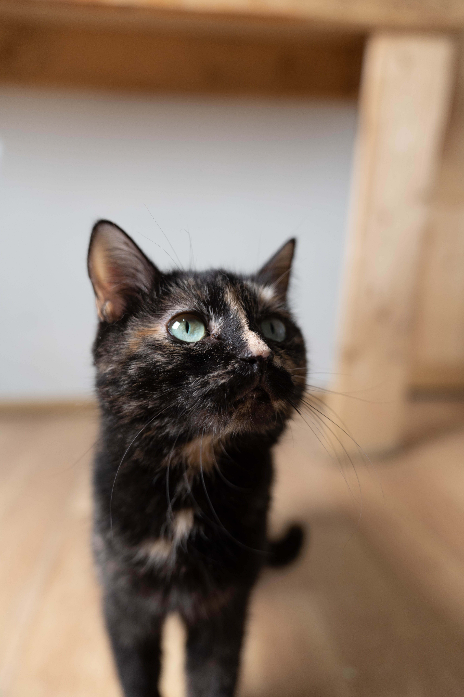
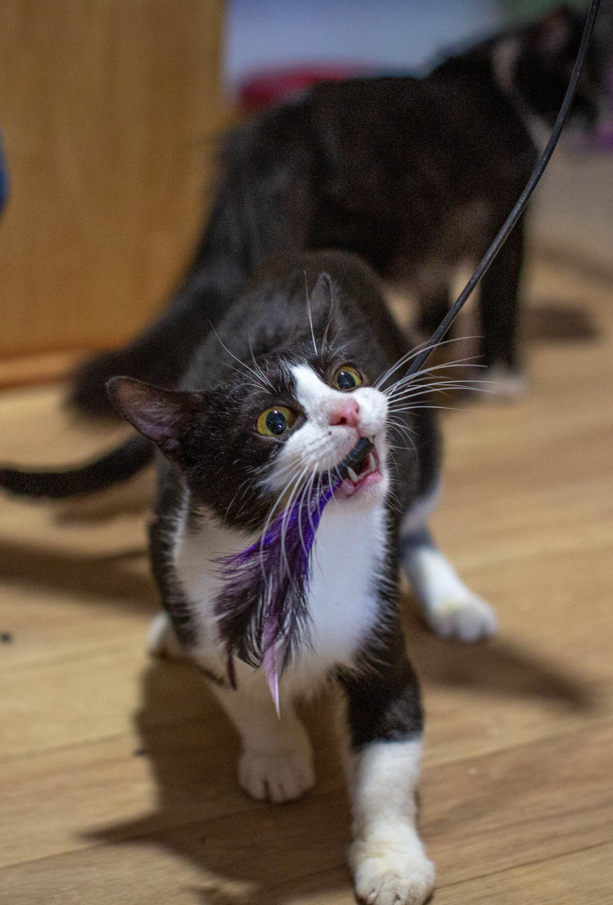

 Перед вами кот-мечта!
Перед вами кот-мечта!
У него настолько мягкая и нежная шубка, что погладив один раз, вы уже не сможете остановиться и представить своей жизни без этого кота.
Шерхан очень спокойный, вальяжный, любит лежать и свысока наблюдать за вами, он создан для спокойной и размеренной жизни.
Котик очень ласковый, навязываться не будет, самодостаточный, но с радостью примет порцию любви и согреет вас своим мурчанием.
Здоров, привит, кастрирован. Шерхану около 6 лет.
Шерхан
У него настолько мягкая и нежная шубка, что погладив один раз, вы уже не сможете остановиться и представить своей жизни без этого кота.
Шерхан очень спокойный, вальяжный, любит лежать и свысока наблюдать за вами, он создан для спокойной и размеренной жизни.
Котик очень ласковый, навязываться не будет, самодостаточный, но с радостью примет порцию любви и согреет вас своим мурчанием.
Здоров, привит, кастрирован. Шерхану около 6 лет.

Братья-подростки Том и Сойер как две капли капли воды — огненные, ласковые, общительные.
Это те самые котики, которые будут синхронно, шаг в шаг, бежать встречать Вас, когда Вы вернётесь домой .
Они очень похожи в своей игривости, и очень привязаны друг к другу!
Том и Сойер здоровы, привиты и кастрированы, отдаются в дом при наличии сеток "Антикошка" или других крепких сеток на окнах.
Том и Сойер
Братья-подростки Том и Сойер как две капли капли воды — огненные, ласковые, общительные.
Это те самые котики, которые будут синхронно, шаг в шаг, бежать встречать Вас, когда Вы вернётесь домой .
Они очень похожи в своей игривости, и очень привязаны друг к другу!
Том и Сойер здоровы, привиты и кастрированы, отдаются в дом при наличии сеток "Антикошка" или других крепких сеток на окнах.


У Чуни есть особый дар — обращать на себя внимание.
Чуня любопытна и разговорчива, порой даже игрива,
но чаще всего — это спокойная и ласковая кошка, которая любит смотреть в окно, в идеале — сидя у человека на руках.
У Чуни есть расстройство пищеварения, которое требует постоянной лечебной диеты ветеринарными кормами,
его трудно вылечить в условиях приюта, но можно купировать в домашних условиях, без стрессов и в заботливых руках.
Чуня привита и стерилизована.
Чуня
У Чуни есть особый дар — обращать на себя внимание.
Чуня любопытна и разговорчива, порой даже игрива,
но чаще всего — это спокойная и ласковая кошка, которая любит смотреть в окно, в идеале — сидя у человека на руках.
У Чуни есть расстройство пищеварения, которое требует постоянной лечебной диеты ветеринарными кормами,
его трудно вылечить в условиях приюта, но можно купировать в домашних условиях, без стрессов и в заботливых руках.
Чуня привита и стерилизована.

Марфа
Марфуша не стесняется обратить на себя внимание своим милым, забавным голосом.
Это пушистое облачко нежности — не какая-то глупая красотка, она взрослая и очень мудрая кошка.
И ей трудно в чем-либо отказать, ведь ее уверенность и мягкость могут покорить кого угодно!
Марфа здорова, привита и стерилизована.

Только взгляните в эти зелёные озёра глаз,
они светятся надеждой - надеждой на уютный дом.
Амбер словно манящий огонёк, который тянется к человеку и готов согреть его.
Амбер поначалу немного осторожна с людьми, но вскоре легко идет на контакт и быстро завязывает дружбу.
Амбер очень хочет стать домашней и любимой, приезжайте знакомиться!
Амбер здорова, привита и стерилизована.
Амбер
они светятся надеждой - надеждой на уютный дом.
Амбер словно манящий огонёк, который тянется к человеку и готов согреть его.
Амбер поначалу немного осторожна с людьми, но вскоре легко идет на контакт и быстро завязывает дружбу.
Амбер очень хочет стать домашней и любимой, приезжайте знакомиться!
Амбер здорова, привита и стерилизована.

Мультику 1 год и 2 месяца, но он очень миниатюрных размеров для своего возраста,
которые возможно он сохранит на всю жизнь и навсегда останется мини-котиком.
Он здоров, привит и кастрирован.
Если Вам удобно общаться через What's app,
то Вы можете связаться с волонтером Екатериной +79263469559.
Мультик
которые возможно он сохранит на всю жизнь и навсегда останется мини-котиком.
Он здоров, привит и кастрирован.
Если Вам удобно общаться через What's app,
то Вы можете связаться с волонтером Екатериной +79263469559.